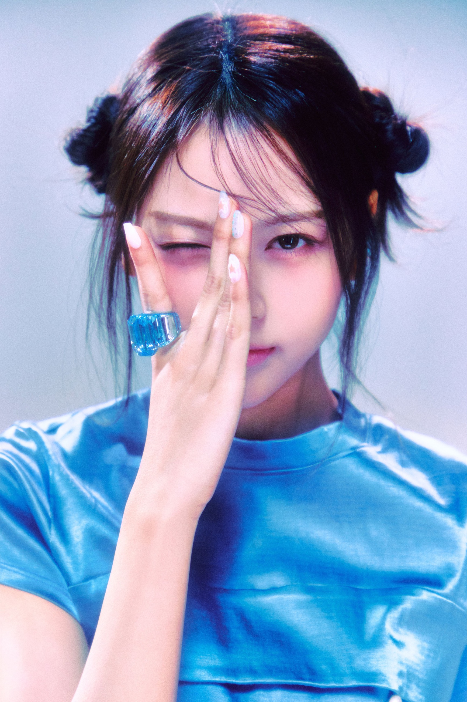
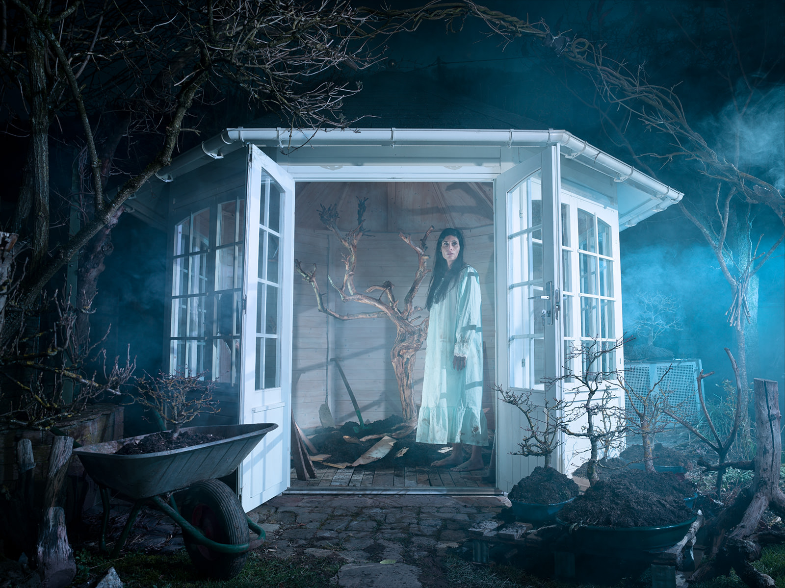
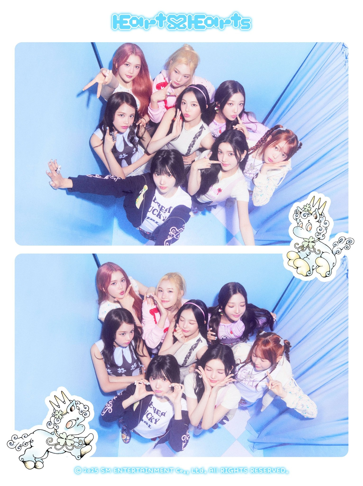
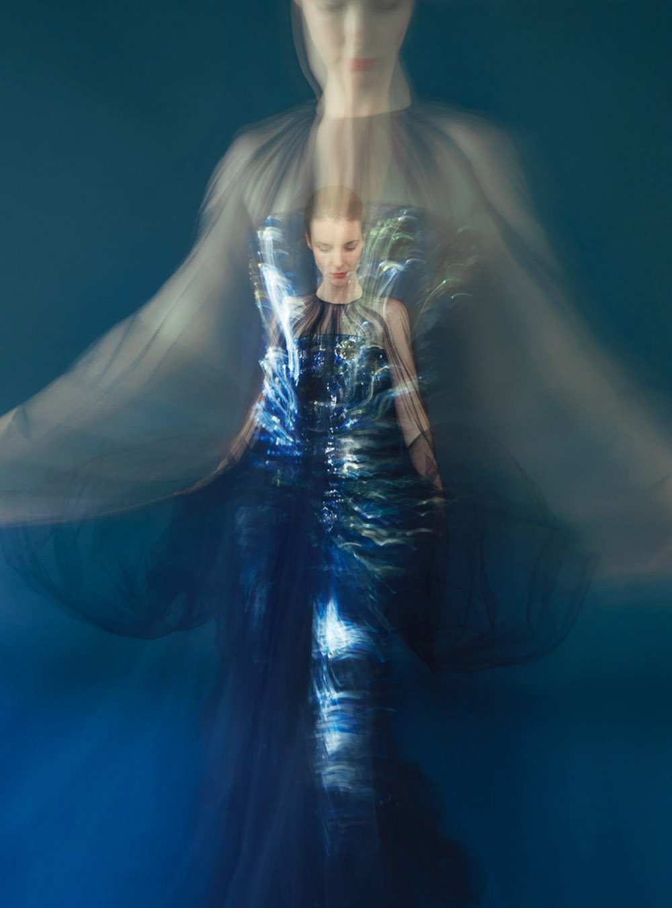
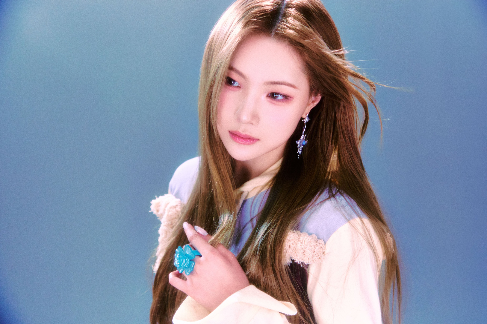
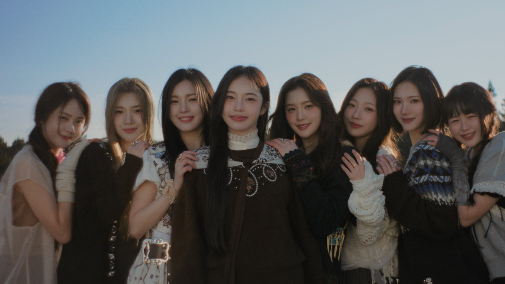
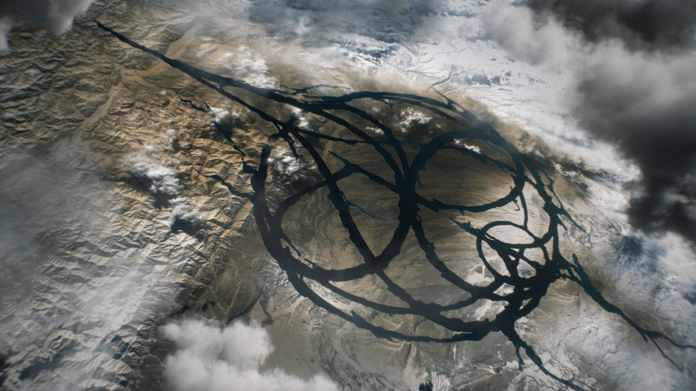
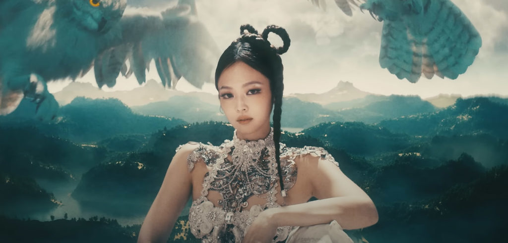
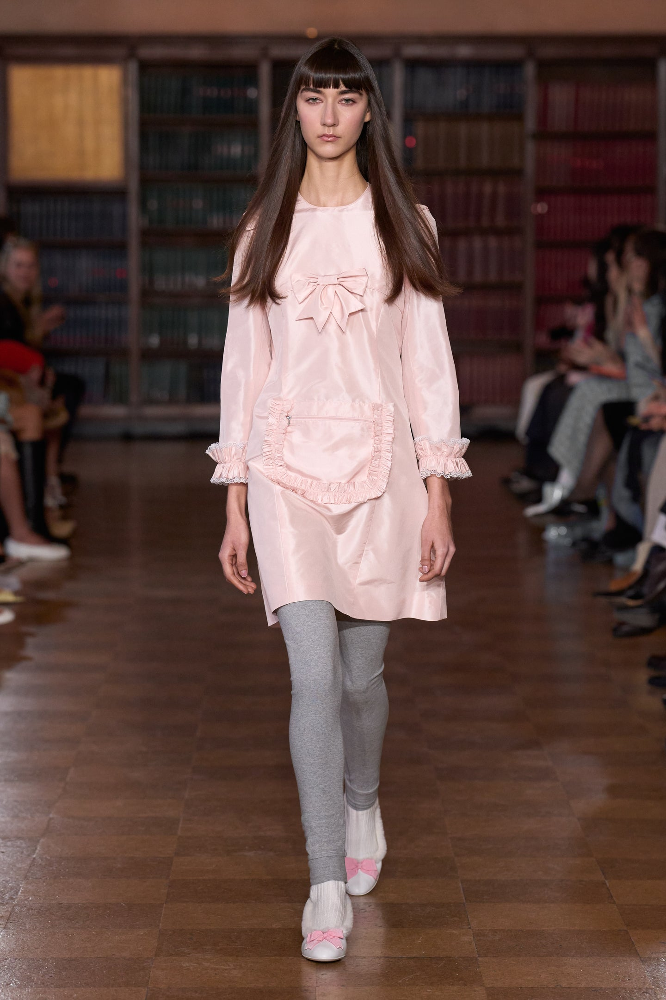

2025.02The Chase
몽환·신비 / 모험의 시작
HEARTS2HEARTS · 미니 3집 비주얼 제안
서로 다른 꿈을 꾸었는데,
깨어 보니 같은 장면이 남아 있었다.
타이틀꿈에서 만나
사운드리퀴드 D&B × 트랜스 팝
비주얼쿨 블루 × 잔상 발레 × 기억 오류
H2H 〈STYLE〉 ORIGINAL LOOKS · © SM ENTERTAINMENT
제안 보기↓
한 장으로 보는 앨범


01 / WHY NOW
공식 발매와 멤버 발언에서 반복된 강점은 남기고, 이미 사용한 장르·공간·정서를 다시 쓰지 않는다.
몽환·신비 / 모험의 시작

학교·요정 / 밝은 자신감

하우스·교복 / 정제된 시크

하트 공장 / 귀여운 반항

오키나와·수학여행 / 함께

밤·실내 / 공유된 내면
공식 팀 정의의 ‘진심 어린 메시지’와 ‘더 큰 우리’, 1주년 인터뷰의 ‘당당함 속 솔직함’을 하나의 시각 사건으로 바꾼다.
〈FOCUS〉와 〈RUDE!〉에서 이미 하우스를 서로 다른 온도로 소화했다. 다음 타이틀은 리퀴드 드럼앤베이스와 트랜스의 상승감으로 8인 군무의 속도를 바꾼다.
〈STYLE〉의 학교, 〈FOCUS〉의 하이틴, 〈Lemon Tang〉의 수학여행 뒤에는 밤의 방·온실·복도처럼 내면을 투사할 실내 공간이 필요하다.
02 / VISUAL WORLD
실제 H2H 발레코어를 중심에 두고 쿨 블루, 초현실 숲, 기억 오류의 촬영 문법을 결합한다. 네 규칙이 음악·뮤직비디오·재킷·의상·패키지에서 같은 세계로 반복된다.
푸른 링·투명 네일·관자놀이 반사광을 한 얼굴에 한 곳씩만 둔다.
날개·왕관 대신 실제 유리, 젖은 흙, 얕은 안개로 꿈의 경계를 만든다.

셔터 1/8초로 얼굴은 선명하게, 팔과 오간자 끝만 세 겹의 잔상으로 기록한다.
버블 튀튀·타이츠·긴 매듭은 유지하고 스모크 블루 오간자, 03:17 반사 봉제, 한 박자 늦은 리본으로 꿈속 무대 의상으로 확장한다.
원본: H2H 〈STYLE〉 © SM Entertainment한 컷에 초현실 장치 하나만 둔다. 모든 것을 이상하게 만들지 않는다.
분리된 꿈이 후렴마다 합쳐지도록 인원 구성을 음악 구조와 맞춘다.
리본과 발레 슈즈의 선을 지우지 않는다. 단, 날개·왕관·과한 네온처럼 세계를 직접 설명하는 소품은 배제한다.
03 / SOUND
연속된 하우스에서 빠져나오되 〈The Chase〉의 몽환성과 〈Lemon Tang〉의 밝은 에너지는 버리지 않는다. 리퀴드 드럼앤베이스의 속도 위에 트랜스 신스와 선명한 한국어 훅을 얹는다.
TITLE TRACK
“눈을 감으면 네가 먼저 와 / 같은 꿈의 문을 열어 놔”
장르리퀴드 D&B · 트랜스 팝
속도160 BPM / 하프타임 벌스
핵심 악기유리 벨 · 롤링 브레이크 · 코러스 패드
킬링 포인트8인 라운드 보컬 → 전원 유니즌
드럼앤베이스의 속도와 트랜스의 상승감을 쓰되, 강한 베이스보다 한국어 멜로디와 8인 합창을 먼저 들리게 한다.
벨 소리가 좌우로 이동하고, 마지막 한 박자에 모든 시계가 03:17로 멈춘다.
TRACK LIST
앰비언트 인트로 / 여덟 숨소리가 한 코드로 합쳐진다.
리퀴드 D&B / 서로 다른 꿈에서 같은 사람을 찾는다.
미드템포 R&B / 같은 색을 서로 다르게 기억한다.
브로큰 비트 팝 / 솔직한 마음을 농담처럼 건넨다.
트랜스 팝 / 밤에만 통하는 여덟 가지 약속.
클로즈 R&B / 꿈이 끝난 뒤에도 남은 온도를 확인한다.
04 / MUSIC VIDEO
CG로 꿈을 설명하지 않는다. 강제 원근 세트, 움직이는 벽, 거울, 장노출을 실제 촬영 장치로 설계하되 카메라·조명·모니터·케이블·스태프는 완성 화면에 노출하지 않는다.
SCENE 01 / 06
00:00 — 00:13
여덟 개의 파란 방. 크기가 다른 침대와 문으로 강제 원근을 만들고, 알람이 모두 03:17에 멈춘다.
0103:17서로 다른 방의 알람이 한 시각에 멈춘다.

02첫 번째 꿈예온이 물속처럼 흔들리는 커튼을 통과한다.
각자의 소품이 같은 온실 바닥에 떨어진다.
JUUN과 IAN의 동작이 한 박자 늦은 잔상으로 남는다.
벽이 접히며 여덟 방이 하나의 원형 발레 살롱으로 이어진다.
마지막에는 장비나 세트 밖을 보여주지 않고 여덟 명의 같은 손동작만 남긴다.
DIRECTING PROTOTYPE
세트·빛·움직임을 고르면 실제 촬영 지시문과 화면이 함께 바뀐다.
파란 방 / 달빛 / 정지24mm 고정 카메라. 침대와 문 크기를 달리해 깊이가 틀어진 방을 만들고 인물만 정면으로 세운다.
04-2 / CREATIVE TEAM PROPOSAL
아래는 섭외 확정 명단이 아니라 실제 작업 이력을 근거로 한 제안 팀이다. H2H의 기존 언어를 지키는 사람과 이번 앨범의 꿈 세계를 확장할 사람을 역할별로 나눴다.

FINAL MV TEAMMV · CAMERA · ART
선택 이유 Rima Yoon은 〈The Chase〉의 낯선 소녀 세계를 이미 이해하고, 〈Armageddon〉에서는 대형 초현실 장면까지 확장했다. Seo Giung은 〈The Chase〉·〈FOCUS〉를 촬영해 멤버의 움직임을 알고, Roh House는 〈The Chase〉와 〈Chill Kill〉에서 실제 세트의 물성을 만들었다.
이번 장면 유리 온실 안에 원형 발레 살롱을 짓고 360°로 회전 촬영한다. 곡선형 바가 나뭇가지로 변하고, 바닥의 꽃가루가 새벽 안개로 이어진다. 촬영 장비와 스태프는 프레임에 넣지 않으며 CG는 공간 전환의 이음새에만 사용한다.
〈STYLE〉에서 감정과 청춘의 표정을 잘 잡았다. 이번 앨범의 섬세한 개인 장면에는 강하지만, 여덟 공간을 하나로 접는 물리적 구조는 Rima Yoon 조합이 더 적합하다.
감정 클로즈업 강점〈FOCUS〉처럼 퍼포먼스 리듬과 선명한 프레이밍에 강하다. 본편보다 ‘03:17 원테이크 퍼포먼스 필름’을 맡길 때 장점이 가장 선명하다.
퍼포먼스 필름 제안〈Chill Kill〉 재킷과 JENNIE 〈ZEN〉에서 인물·식물·초현실 이미지를 한 장에 압축했다. 서사 본편보다 재킷 촬영과 비주얼 컨설팅에 배치한다.
재킷·키 비주얼 선택〈Feel My Rhythm〉의 회화적 판타지와 〈Armageddon〉의 그래픽 시스템을 모두 경험했다. 앨범 전체 판단 기준을 한 축으로 묶는다.
선택잔상, 피부의 물성, 식물 이미지를 정적인 한 컷에 압축한다. ‘예쁜 숲’이 아니라 조금 낯선 꿈의 초상을 만든다.
선택2026 NME H2H 화보 팀을 유지해 멤버별 비율과 표정을 안다. 이번에는 발레코어를 ‘잔상 발레’로 확장한다.
선택H2H가 실제 착용한 브랜드를 이어 간다. Sandy Liang의 발레 실루엣에 KIMHĒKIM의 금속·리본 구조를 한 지점만 더한다.
핵심 피스최근 H2H 무대 의상 경험을 바탕으로 댄스 쇼츠, 소프트 솔, 복제 의상까지 공연 가능한 사양으로 다시 만든다.
커스텀·복제〈Feel My Rhythm〉의 회화성과 〈Armageddon〉의 시스템을 연결한다. 안무 동선을 손그림 ‘꿈 악보’로 바꿔 패키지에 적용한다.
패키지


05 / JACKET
A
ROOM VER.
1인과 2인 중심. 여덟 방의 배치와 소품은 다르지만 알람 시각, 파란 실, 침대 높이는 이어진다.
OUTLANDS VER.
4＋4와 8인 중심. 얕은 안개와 젖은 식물만 사용하고, 동화 의상·요정 소품은 제거한다.
ERROR VER.
개인 클로즈업 중심. 한 얼굴에 잔상은 한 번만, 반짝이는 장식은 눈·귀·손 중 한 곳만 둔다.
HAIR & MAKE-UP
피부결이 보이는 세미 매트유리알 피부 표현 배제
눈데님 블루 라이너 2~5mm8인 동일 형태 배제
입술본래 입술색 + 투명 광파란 립·실버 립 배제
헤어발레 번·브레이드·젖은 잔머리얇은 새틴 리본 1개만 허용
06 / STYLING DEVELOPMENT
하츠투하츠는 버블 스커트, 타이츠, 메리제인, 긴 매듭, 몸에 붙는 작은 상의처럼 발레코어에 가까운 어휘를 반복해 왔다. 그것을 버리지 않고 〈같이 꾼 꿈〉의 파란 새벽, 겹치는 움직임, 03:17의 흔적으로 디벨롭한다.
AFTERIMAGE BALLET
원본의 둥근 스커트와 가는 발등선은 살리고, 보디스와 튀튀의 볼륨을 키워 한눈에 ‘발레’로 읽히게 한다. 일상적인 후드·카디건·와이드 팬츠는 메인 착장에서 제외한다.
H2H 〈STYLE〉 원본 화보를 베이스로 한 디벨롭 지시. 생성형 착장 이미지가 아니라 실제 착장 위에서 무엇을 남기고 바꿀지 먼저 판단했다.
발레 실루엣은 2·2·2·2로 나누고, 손·발·리본·옷자락이 하나의 흐름을 만들게 한다.
보디스·타이츠·버블 튀튀 등 기존 H2H 발레코어를 가장 가까운 거리에서 보여 준다.
밀크 55 · 블러시 25 · 꿈빛 블루 20같은 베이스 위에 스모크 블루 오간자와 젖은 새틴을 더한다. 리본은 서로의 손목으로 이어진다.
오간자 · 안개 · 새벽 역광한 룩당 시접·리본 길이·반사 봉제 중 하나만 어긋난다. 03:17은 직광에서 한 번만 보인다.
보라색 5 · 반사 실 · 1/8초 비율·인상 기준
비율·인상 기준 비율·인상 기준
비율·인상 기준 비율·인상 기준
비율·인상 기준 비율·인상 기준
비율·인상 기준 동작·인상 기준
동작·인상 기준 비율·인상 기준
비율·인상 기준 리듬·인상 기준
리듬·인상 기준 등장·인상 기준
등장·인상 기준STYLE 착장과 최근 무대복을 입힌 상태에서 버블 위치, 랩 깊이, 다리 비율을 먼저 기록한다. 잘 맞았던 선을 새 옷에서도 유지한다.
포인트 슈즈는 사용하지 않는다. T-스트랩 2종과 발레 스니커 1종을 8카운트·회전·바닥 동작으로 테스트하고 분리창 고무를 확정한다.
팬 촬영 영상까지 고려해 앞·뒤·측면에서 리본이 얼굴을 가리는지, 오간자와 튤이 멤버 간 손동작에 걸리는지 프레임 단위로 확인한다.
금속 조형은 경량 소재로 복제하고 모서리를 라운딩한다. 모든 지퍼 풀러·고리·장식은 점프와 바닥 동작 후 이탈 여부를 확인한다.
전 착장에 내장 쇼츠, 스킨톤 안감, 땀 흡수 패치를 적용한다. 멤버별 본 의상 1벌과 동일 원단 복제 1벌을 준비한다.
ROOM 원본에 오간자·젖은 새틴·오류 한 개만 더해 OUTLANDS와 ERROR를 만든다. 세 버전이 다른 코어로 흩어지지 않게 한다.
이미지 규칙 · 동일 화보 8장 / 반신 프레이밍 / 눈높이 통일 / 멤버별 착장 명세와 피팅 기준 병기 · 스타일 원본: Hearts2Hearts 2nd Single 〈STYLE〉 프로모션 화보 © SM Entertainment · 방향 근거: NME The Cover 2026, PUNKYSPIDER / Su Jeong Jang / Sandy Liang 착장 크레딧 · 본 페이지의 인명은 섭외 확정이 아닌 제안이다.
07 / OBJECT & ROLLOUT
MAIN EDITION / 꿈 기록철
반투명 트레이싱 필름 8장을 멤버 순서대로 겹치면 단체 사진과 03:17이 완성된다. 수집을 위해 관계를 쪼개지 않고, 전원 세트를 기본으로 둔다.
포토북112쪽 / 방 → 온실 → 아침
핵심 구성잔상 필름 8장 전원 세트
포토카드개인 1종 + 2인 1종
재질무광지 · 트레이싱지 · 은박 1도
설명 없이 같은 시각을 가리키는 여덟 알람 이미지.
8 정지 이미지멤버별 방에서 발견된 물건과 한 문장.
8 세로 필름파란 방의 벽이 접혀 온실이 되는 콘셉트 필름.
45초 필름잠든 방, 같은 숲, 기억 오류 재킷 순차 공개.
3 사진 세트팬이 선택한 두 색을 겹쳐 꿈 기록 카드를 만든다.
웹 생성기8인 라운드 보컬이 한 줄씩 쌓이는 아카펠라 티저.
24초 사운드여덟 방이 하나의 원형 세트로 접히는 본편.
본편 공개원형 카메라 한 대로 8인 대형 변화를 끊지 않고 촬영.
퍼포먼스 필름08 / 실행 설계
SM Creative Visual 공고의 업무를 페이지 구조 자체로 증명한다.
팀 서사와 발매 흐름에서 ‘공유된 내면’이라는 다음 장을 도출했다.
WHY NOW → VISUAL WORLD쿨 블루, 실제 공간과 불가능한 흔적이라는 단일 규칙으로 화면과 패키지를 묶었다.
HERO → JACKET → OBJECT버전별 인원, 렌즈, 시점, 조명, 배제 요소까지 촬영 가능한 언어로 적었다.
ROOM / OUTLANDS / ERROR하나의 코어 안에서 8인의 소재·실루엣·기능 디테일을 나누고, 피팅·카메라·안무 테스트 기준까지 설계했다.
WARDROBE → FITTING티저, 웹 생성기, 사운드, 퍼포먼스 필름이 같은 03:17 서사를 쌓도록 설계했다.
D−21 → D＋03PRIMARY SOURCES
하츠투하츠의 다음 장은 더 큰 세계가 아니라,
서로의 안쪽에서 발견한 같은 장면이다.